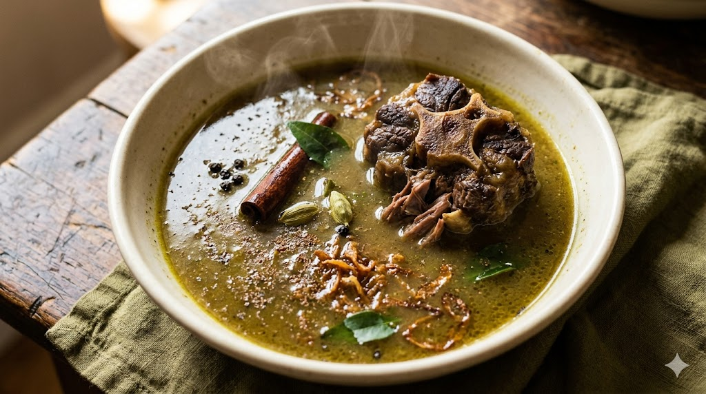

from my kitchen to yours
Recipes for Mum
Written down so I don't have to keep ringing.
scroll for recipesThis is a small set of recipes I'm writing down for Mum — the ones she's asked me for, and the ones I want to remember her teaching me. Some of them are mine now and some of them will always be hers, and the difference matters less than I used to think.
I'll add to this slowly. A new recipe goes up when one is worth keeping — not before. Each is a love letter that happens to contain instructions, and they're meant to be read at least as much as they're meant to be cooked.
The Collection

No. 01
Chicken, Prawn, Mushroom & Bacon Alfredo
The pasta Stina asks for by name.

No. 02
Mum's Anglo-Indian Oxtail / Valadi Soup
The greenish-brown one — the way you used to make it on cold nights.
More to come, slowly.
— Aalan